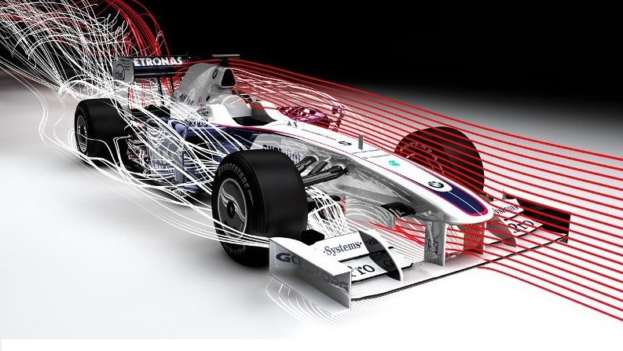
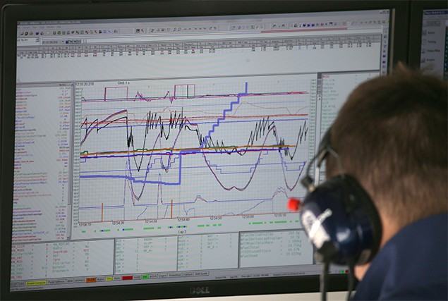
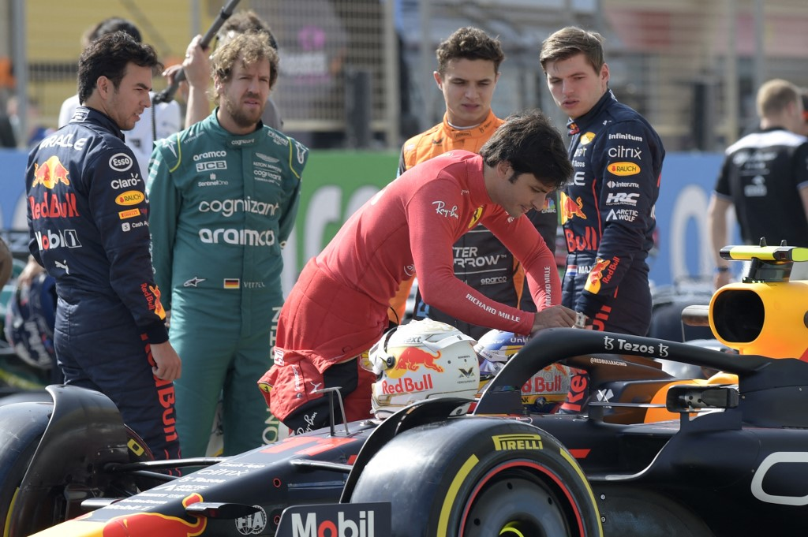

Momenti Chiave

Cambi gomme in 2 secondi

Setup aerodinamico

Strategie live dei team

Analisi telemetrica

Osserva da pochi metri il lavoro dei meccanici, le strategie dei team e la tensione dei secondi decisivi prima della gara.
Prenota la tua esperienza



Arrivo vettura
Sollevamento
Smontaggio
Montaggio
Ripartenza